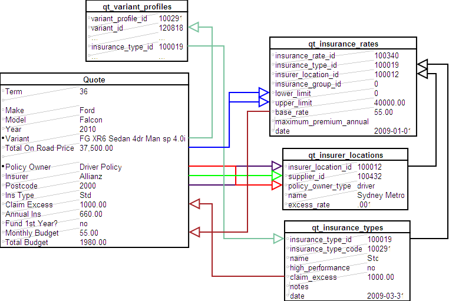

Insurance Premium
From Help wiki
Main Page → Comprehensive Insurance → Policy Owner | Insurer | Insurance Premium →  Insurance Premium Setup
Insurance Premium Setup
Contents |
Overview
Insurance Premiums can be calculated within a quote if the supporting tables are set-up. Standard system calculations use a combination of the selected Policy Owner, Insurer, "Insurance Loc.", "Variant" and "Total On Road Price" to derive an Insurance Premium and Excess value for the quote. The table relationships are illustrated below.
Note the vehicle value used to apply against insurer limits may be set to the depreciable value (default) or the total on road price (inc GST) depending on the insurer's definitions using the Global Control comprehensive_insurance_basis.
To set up, or add in new insurance calculations contact your Account Manager.
External Calculation
This is the default calculation method in Catch-e. The Global Control insurance_calculation_method is set to "External".
For further details please refer to Insurance Premium Setup page.
Internal Calculation
You can also develop more complex insurance calculations with your Insurer for use in Catch-e. In this case, the Global Control insurance_calculation_method can be switched from "External" to "Internal" to utilise a client specific insurance calculation.
This can be used where an Internal Policy has been set-up on the "Policy Owner" field. Client specific development work is required to use Internal calculations.
When an "Internal" calculation is used, some extra business rules apply to some of the Contract fields.
- If the "Policy Owner" is Internal, then "Insurer", "Policy Number", "Start Date", "Policy Due Date", Billing Type and "Billing Frequency" are disabled.
- If the "Policy Owner" is Client, then "Insurer", "Policy Number", "Start Date" and "Policy Due Date" are disabled.
Insurance Calculation using Location (illustr.)
This illustration shows the standard table set-up we use to derive insurance calculations in a quote.

A simple illustration of the Insurance Premium calculation
Insurance Calculation using Postcode (illustr.)
You can choose to replace the "Location" field with "Postcode" in your insurance calculations.
We do this by setting the Global Controls field insurance_location_by_postcode_flag to "yes". This flag then uses the table qt_insurer_locations_by_postcode to link to the insurer's location. The table contains postcode and state fields that map to an insurance location for pricing. In a quote, the available postcodes are limited to those within the vehicle's "Delivery State".

A simple illustration of the Insurance Premium calculation where Postcode is switched ON
System Notes
- 5243: Insurer location postcode 2611 in ACT and NSW. Live 28/11/2012
- 7837: Comp Insurance processing improvements. Live 13/08/2013
- 11686: Auto populate Comprehensive Insurance fields. Live xx/05/2016
- (DEV-22333) Bugsnag Error: Error reading gb_controls 'comprehensive_insurance_basis'. Live 22/09/2025

{kind=link}